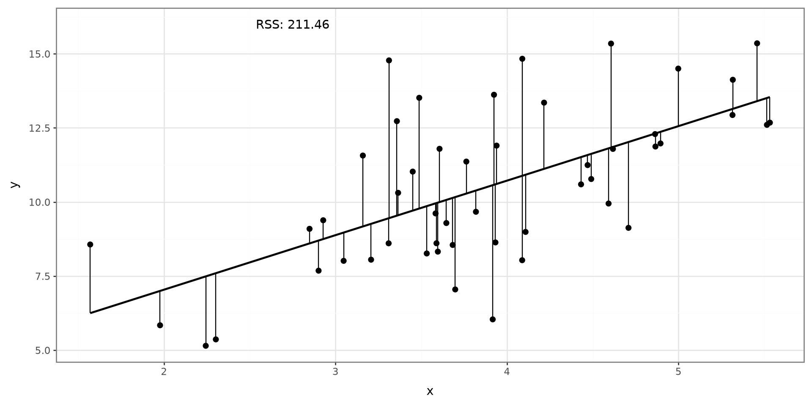

Linear Regression
Learning Objectives
- Fit and interpret a simple linear regression model with the formula API
- Add continuous and categorical predictors to a regression model
- Fit the same models from design matrices with the matrix API
Python Modules, Functions, and Parameters
Scatter Plot

Data Prep
Linear Regression
Linear Regression
Python Code
Multivariable Linear Regression
Matrix Formulation
Linear Regression
Linear regression is used to model the association between a set of predictor variables (x’s) and an outcome variable (y). Linear regression will fit a line that best describes the data points.
Scatter Plot

Simple Linear Regression
Simple linear regression will model the association between one predictor variable and an outcome:
\[ Y = \beta_0 + \beta_1 X + \epsilon \]
\(\beta_0\): Intercept term
\(\beta_1\): Slope term
\(\epsilon\sim N(0,\sigma^2)\)
Estimated Model
\[ \hat Y = \hat \beta_0 + \hat \beta_1 X \]
Process

Process

Sums of Error Squared
\[ RSS = \sum^n_{i=1}(Y_i-\hat Y_i)^2 \]
Searching

Searching

Searching

Searching

Final

Python Code
Linear Regression
Python Code
Multivariable Linear Regression
Matrix Formulation
Model Syntax
The statsmodels.formula.api module lets us describe a regression model with a formula:
- The variable
Yto the left of~is the outcome - Variable
Xto the right of~are predictors DATAis the name of the pandas data frame.fit()estimates the regression coefficients
Penguins Example Data
The fitted equation is
\[ \widehat{\text{body mass}} = \hat\beta_0 + \hat\beta_1(\text{flipper_length}). \]
The slope estimates the change in mean body mass associated with a one-millimeter increase in flipper length.
Fitting Model
Examming Output
Predict Body Mass
Prediction data must use the same predictor name as the model formula.
| mean | mean_se | mean_ci_lower | mean_ci_upper | obs_ci_lower | obs_ci_upper | |
|---|---|---|---|---|---|---|
| 0 | 3657.027846 | 27.385208 | 3603.156847 | 3710.898845 | 2881.386950 | 4432.668743 |
| 1 | 4158.560506 | 21.606470 | 4116.057191 | 4201.063820 | 3383.626155 | 4933.494856 |
| 2 | 4660.093165 | 25.655248 | 4609.625269 | 4710.561061 | 3884.681194 | 5435.505136 |
Multivariable Linear Regression
Linear Regression
Python Code
Multivariable Linear Regression
Matrix Formulation
MLR
Multivariable linear regression models are used when more than one explanatory variable is used to explain the outcome of interest.
Continuous Variable
Add predictors on the right side of the formula with +:
\[Y = \beta_0 +\beta_1 X_1 + \beta_2 X_2\]
- The variable
Yis the outcome - Variables
X1andX2are the predictors DATAis the name of the pandas data frame.fit()estimates the regression coefficients
Example
Using the Palmer Penguins data, fit a model with body_mass_g as the outcome and flipper_length_mm and bill_length_mm as predictors.
| Dep. Variable: | body_mass_g | R-squared: | 0.763 |
|---|---|---|---|
| Model: | OLS | Adj. R-squared: | 0.761 |
| Method: | Least Squares | F-statistic: | 530.4 |
| Date: | Sun, 06 Sep 2026 | Prob (F-statistic): | 8.15e-104 |
| Time: | 19:11:02 | Log-Likelihood: | -2460.6 |
| No. Observations: | 333 | AIC: | 4927. |
| Df Residuals: | 330 | BIC: | 4939. |
| Df Model: | 2 | ||
| Covariance Type: | nonrobust |
| coef | std err | t | P>|t| | [0.025 | 0.975] | |
|---|---|---|---|---|---|---|
| Intercept | -5836.2987 | 312.604 | -18.670 | 0.000 | -6451.246 | -5221.352 |
| flipper_length_mm | 48.8897 | 2.034 | 24.034 | 0.000 | 44.888 | 52.891 |
| bill_length_mm | 4.9586 | 5.214 | 0.951 | 0.342 | -5.297 | 15.214 |
| Omnibus: | 5.790 | Durbin-Watson: | 2.055 |
|---|---|---|---|
| Prob(Omnibus): | 0.055 | Jarque-Bera (JB): | 5.729 |
| Skew: | 0.321 | Prob(JB): | 0.0570 |
| Kurtosis: | 3.031 | Cond. No. | 2.99e+03 |
Notes:
[1] Standard Errors assume that the covariance matrix of the errors is correctly specified.
[2] The condition number is large, 2.99e+03. This might indicate that there are
strong multicollinearity or other numerical problems.
Predict with Multiple Variables
Supply a value for every predictor used in the formula.
| flipper_length_mm | bill_length_mm | predicted_body_mass_g | |
|---|---|---|---|
| 0 | 190 | 40 | 3651.09 |
| 1 | 200 | 45 | 4164.78 |
| 2 | 210 | 50 | 4678.47 |
Categorical Variable
A categorical variable can be included in a model, but a reference category must be specified.
Fitting a model with categorical variables
To fit a model with categorical variables, we must utilize dummy (binary) variables that indicate which category is being referenced. We use \(C-1\) dummy variables where \(C\) indicates the number of categories. When coded correctly, each category will be represented by a combination of dummy variables.
Example
If we have 4 categories, we will need 3 dummy variables:
| Cat 1 | Cat 2 | Cat 3 | Cat 4 | |
|---|---|---|---|---|
| Dummy 1 | 1 | 0 | 0 | 0 |
| Dummy 2 | 0 | 1 | 0 | 0 |
| Dummy 3 | 0 | 0 | 1 | 0 |
Which one is the reference category?
Fitting a model with categorical variables
- The variable
Yis the outcome X1is a nemerical predictorX2is a categorical predictor variableC()indicates dummy variablesDATAis the name of the pandas data frame.fit()estimates the regression coefficients
Island Variable
Fitting a model with categorical variables
Using the Palmer Penguins data, fit a model with body_mass_g as the outcome and flipper_length_mm and island as predictors.
| Dep. Variable: | body_mass_g | R-squared: | 0.778 |
|---|---|---|---|
| Model: | OLS | Adj. R-squared: | 0.776 |
| Method: | Least Squares | F-statistic: | 384.5 |
| Date: | Sun, 06 Sep 2026 | Prob (F-statistic): | 3.65e-107 |
| Time: | 19:11:02 | Log-Likelihood: | -2449.5 |
| No. Observations: | 333 | AIC: | 4907. |
| Df Residuals: | 329 | BIC: | 4922. |
| Df Model: | 3 | ||
| Covariance Type: | nonrobust |
| coef | std err | t | P>|t| | [0.025 | 0.975] | |
|---|---|---|---|---|---|---|
| Intercept | -4687.8612 | 392.854 | -11.933 | 0.000 | -5460.684 | -3915.038 |
| C(island)[T.Dream] | -265.3651 | 54.845 | -4.838 | 0.000 | -373.256 | -157.475 |
| C(island)[T.Torgersen] | -201.4608 | 71.525 | -2.817 | 0.005 | -342.166 | -60.756 |
| flipper_length_mm | 44.8898 | 1.869 | 24.015 | 0.000 | 41.213 | 48.567 |
| Omnibus: | 6.721 | Durbin-Watson: | 2.312 |
|---|---|---|---|
| Prob(Omnibus): | 0.035 | Jarque-Bera (JB): | 6.500 |
| Skew: | 0.322 | Prob(JB): | 0.0388 |
| Kurtosis: | 3.234 | Cond. No. | 3.82e+03 |
Notes:
[1] Standard Errors assume that the covariance matrix of the errors is correctly specified.
[2] The condition number is large, 3.82e+03. This might indicate that there are
strong multicollinearity or other numerical problems.
Formula API Handles Indicator Variables
C(island) tells the formula API to treat island as categorical. Internally, the model creates \(C-1\) indicator columns.
['Intercept',
'C(island)[T.Dream]',
'C(island)[T.Torgersen]',
'flipper_length_mm']We usually do not create those indicator variables ourselves when using statsmodels.formula.api.
Matrix Formulation
Linear Regression
Python Code
Multivariable Linear Regression
Matrix Formulation
Matrix Formulation
\[Y_i = \boldsymbol X_i^\mathrm T \boldsymbol \beta + \epsilon_i\]
\(Y_i\): Outcome Variable
\(\boldsymbol X_i\): Predictors
\(\boldsymbol \beta\): Coefficients
\(\epsilon_i\): error term
Matrix Formulation
\[\boldsymbol\beta = (\boldsymbol X^\mathrm T \boldsymbol X)^{-1} \boldsymbol X^\mathrm T \boldsymbol Y\]
Matrix API: Supply \(Y\) and \(X\)
With statsmodels.api, we provide the outcome vector and design matrix separately.
Inspect the Design Matrix
Each row represents one penguin, and each column represents one model coefficient.
The const column of ones corresponds to the intercept \(\beta_0\).
Examine the Matrix-Model Results
| Dep. Variable: | body_mass_g | R-squared: | 0.762 |
|---|---|---|---|
| Model: | OLS | Adj. R-squared: | 0.761 |
| Method: | Least Squares | F-statistic: | 1060. |
| Date: | Sun, 06 Sep 2026 | Prob (F-statistic): | 3.13e-105 |
| Time: | 19:11:02 | Log-Likelihood: | -2461.1 |
| No. Observations: | 333 | AIC: | 4926. |
| Df Residuals: | 331 | BIC: | 4934. |
| Df Model: | 1 | ||
| Covariance Type: | nonrobust |
| coef | std err | t | P>|t| | [0.025 | 0.975] | |
|---|---|---|---|---|---|---|
| const | -5872.0927 | 310.285 | -18.925 | 0.000 | -6482.472 | -5261.713 |
| flipper_length_mm | 50.1533 | 1.540 | 32.562 | 0.000 | 47.123 | 53.183 |
| Omnibus: | 5.922 | Durbin-Watson: | 2.116 |
|---|---|---|---|
| Prob(Omnibus): | 0.052 | Jarque-Bera (JB): | 5.876 |
| Skew: | 0.325 | Prob(JB): | 0.0530 |
| Kurtosis: | 3.025 | Cond. No. | 2.90e+03 |
Notes:
[1] Standard Errors assume that the covariance matrix of the errors is correctly specified.
[2] The condition number is large, 2.9e+03. This might indicate that there are
strong multicollinearity or other numerical problems.
The matrix model and formula model produce the same estimates when they use the same rows and columns.
Multiple Continuous Predictors as a Matrix
| estimate | |
|---|---|
| const | -5836.298732 |
| flipper_length_mm | 48.889692 |
| bill_length_mm | 4.958601 |
Create Indicator Columns for a Category
The matrix API requires us to create the indicator columns, we will use pd.get_dummies to create them. drop_first=True leaves Biscoe as the reference category.
| const | flipper_length_mm | island_Dream | island_Torgersen | |
|---|---|---|---|---|
| 0 | 1.0 | 181.0 | 0.0 | 1.0 |
| 1 | 1.0 | 186.0 | 0.0 | 1.0 |
| 2 | 1.0 | 195.0 | 0.0 | 1.0 |
| 4 | 1.0 | 193.0 | 0.0 | 1.0 |
| 5 | 1.0 | 190.0 | 0.0 | 1.0 |
Fit the Categorical Matrix Model
| estimate | |
|---|---|
| const | -4687.861178 |
| flipper_length_mm | 44.889817 |
| island_Dream | -265.365111 |
| island_Torgersen | -201.460809 |
The coefficients match the formula model; only the indicator-column names differ.
Formula API or Matrix API?
| Approach | Model specification | Categorical variables | Intercept |
|---|---|---|---|
statsmodels.formula.api |
Formula such as y ~ x1 + C(group) |
Created automatically | Added automatically |
statsmodels.api |
Separate y vector and X matrix |
Create indicator columns | Add with sm.add_constant() |
Use the formula API for readable statistical models. Use the matrix API when you need direct control over the design matrix.